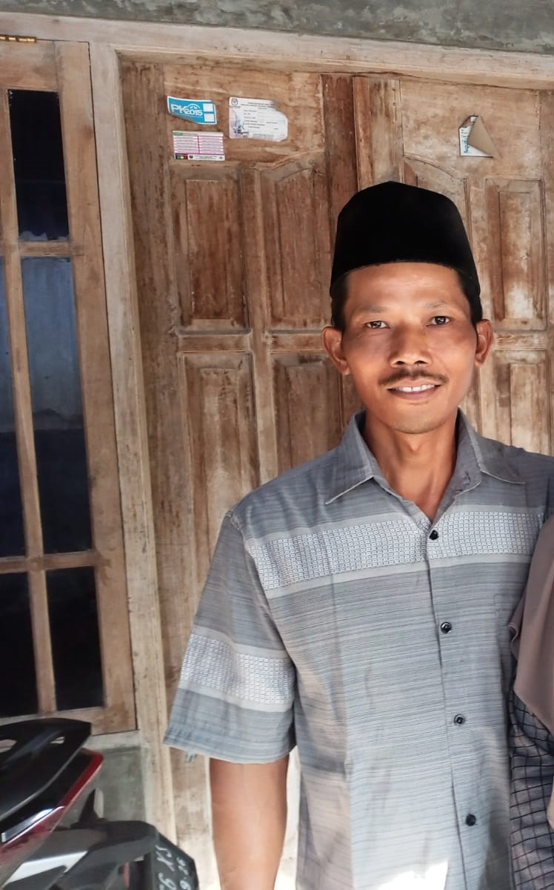
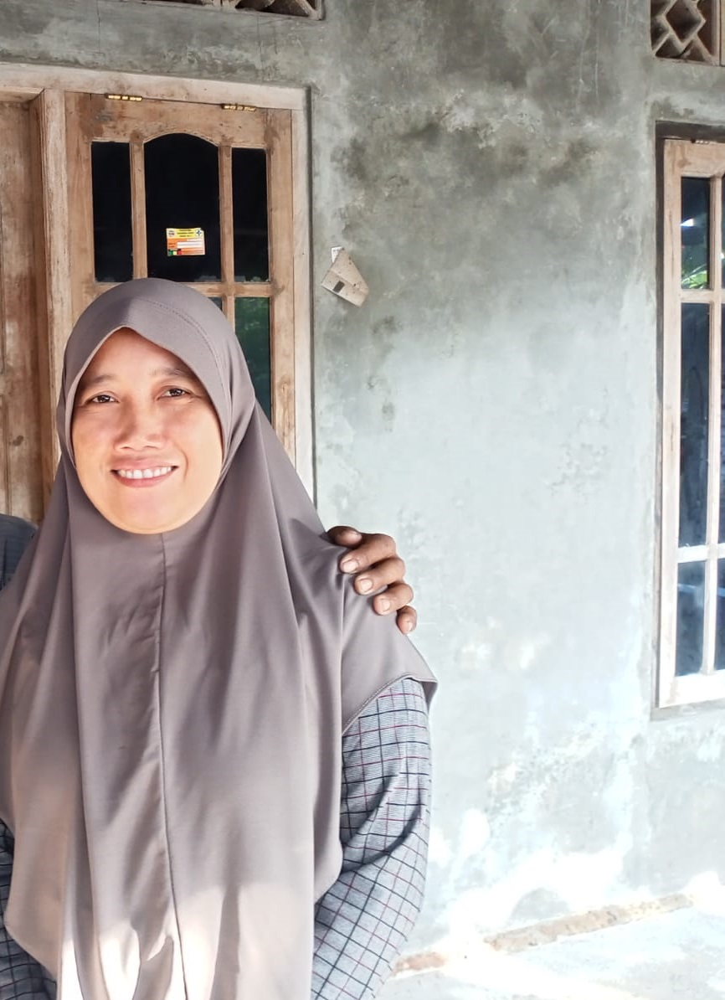

berisi
foto & video
berikut adalah video yang berisi
tentang cara membuat sampai interview dengan pemilik toko,dan lengkab dengan subttitle penjalasan.
yang telah di usahakan
dibawah ini adalah informasi yang saya dapat dari interview
disini ibu trinurrohmah adalah pemilik warung tunggal yang menjual jajanan/minuman yang di jual dengan harga 500 sampai 3000,ibu trinurrohmah tinggal di Tempurejo-widodaren-Rt03-Rw02,beliau sudah berjualan di sini sejak 2020,selain jajanan dan minuman,ibu trinurrohmah juga mempunyai jajanan khusus yakni burger,kebab,roti bakar,dan laker dengan harga 1000 sampai 3000
berikut sebagian cara pembuatan
disini saya juga mangambil video saat ibu trinurrohmah memasak beberapa jajanan
seperti laker,kebab,burger,dan roti bakar
selamat menonton dan semoga ini bisa berguna
cara membuat burger
belah roti menjadi dua,lalu oleskan dengan mentega panggang di atas teflon,lalu olesi daging dengan mentega dan masukan ke teflon,setelah itu potong selda menjadi ukuran yang pas dengan yang di ingin kan,jika sudah,susun dengan susunan roti-daging-timun-saus tomat-mayones-selada-roti
cara membuat roti bakar
roti di panggang lalau di olesi dengan susu coklat,selai strobery dan blubery,lalu taburi dengan mesis coklat,dan ketika roti sudah matang,lipat roti dari sudut ke sudut agar membentuk segitiga
cara membuat laker
buat lah adonan tepung,lalu masak di atas teflon,jika sudah matang,olesi dengan susu coklat,selai blubery,strobery dan taburi dengan mesis,lalu lipat laker hingga membentuk kerucut
cara membuat kebab
olesi kulit kebab dengan mentega lalu,masak di atas teflon,di beri kocokan telur seperti yang ada di video,,lalu jia sudah matangkulit kebab nya,taburi dengan daun bawang,mie,lalu olesi dengan saus tomat,mayones,tepung roti,lalu lipat dari sudut ke sudut hingga menjadi segitiga
pekerja di warung tunggal
disini hanya ada suami istri yang bekerja di warung tunggal

bpk.dakori
beliau adalah penjual keliling dari warung tunggal

ibu.trinurrohmah
beliau adalah seseorang yang berjualan di toko warung tunggal
cerita singkat warung tunggal
mereka sudah berjualan selama 3 tahun dan di mulai pada tahun 2020
awal dari penjualan mereka,di mulai dengan jualan melalui gerobak
setelah terkumpul cukup dana,mereka membangun toko yang ada sampai sekarang.